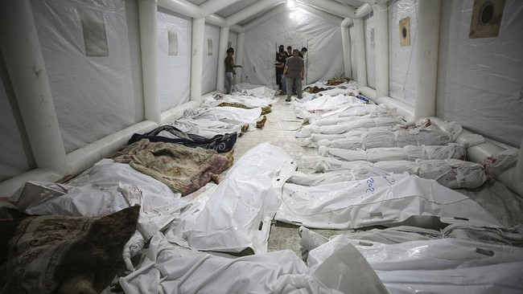

Belakangan ini akun X milik Andriani Toegiono alias Dorippu dibanjiri dengan curhatan tentang ART atau Asisten Rumah Tangga.
Sebagai boy group yang membuat dan memproduksi lagu sendiri, Stray Kids kerap membuat lagu sesuai dengan apa yang sedang mereka alami. Berikut ini lagu-lagu yang bisa membuatmu semangat lagi dalam menjalani hidup!
Kementerian Kesehatan Gaza melaporkan korban perang milisi Hamas Palestina dengan Israel mencapai 3.785 jiwa sejak pecah pada 7 Oktober lalu.